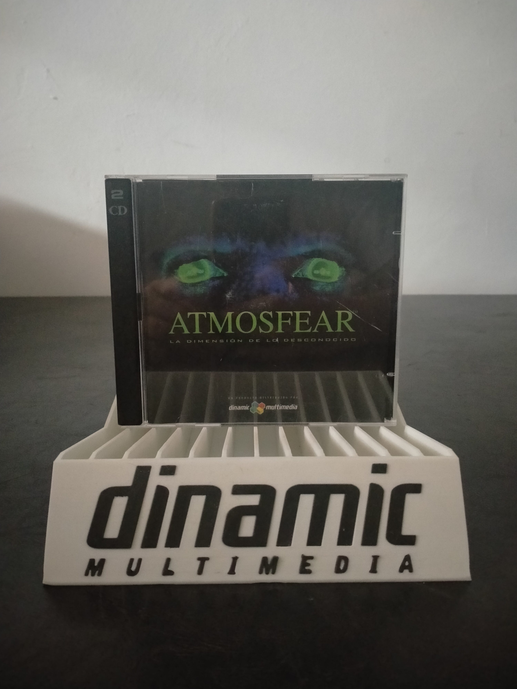

Ficha #000000
Atmosfear: La Dimensión de lo Desconocido
Edición española de Atmosfear: The Third Dimension, adaptación para ordenador de la conocida serie australiana de juegos de tablero interactivos Atmosfear. Publicado en España por Dinamic Multimedia en 1996, propone una carrera contrarreloj por un mundo de terror gobernado por el Guardián de la Puerta, donde el jugador debe explorar escenarios en primera persona, superar pruebas, resolver enigmas y evitar distintas amenazas sobrenaturales. Su presentación combina gráficos tridimensionales prerenderizados, secuencias de vídeo, voces digitalizadas y elementos propios de los juegos de tablero y de las producciones multimedia de mediados de los años noventa. La edición localizada al castellano se distribuyó en dos CD-ROM y constituye un ejemplo representativo de la transición de las franquicias de vídeo interactivo y juegos de mesa con VHS hacia experiencias autónomas para PC.
- Formato
- Jewel Case
- Plataforma
- Win3.x Win95
- Género
- Estrategia por turnos Juego de tablero Aventura en primera persona Terror Puzzle
- Serie
- Todos Jewel Case Dinamic multimedia
- Desarrollador
- A Couple 'A Cowboys Pty Limited
- Distribuidor
- EMG Publishing, Dinamic Multimedia
- EAN
- —
Contenido de la edición
- Caja jewel case
- 2 CD-ROM
- Manual de instrucciones
Preservación
- Protección
- No determinado
- Formato recomendado
- BIN/CUE
- Jugable en virtualización
- Sí
Preservar ambos CD-ROM mediante imágenes BIN/CUE para conservar posibles pistas, sesiones o estructuras multimedia, documentando el orden de los discos y la versión española. La ejecución virtual es viable mediante una máquina virtual con Windows 3.1 o Windows 95 y configuración de vídeo y audio compatible con software multimedia de 16 bits.